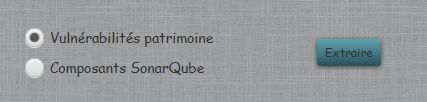
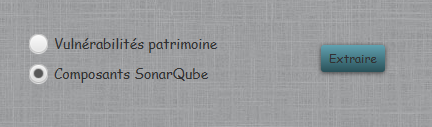

Extractions
Cette fonction permet d'extraire les données sous forme de fichiers Excel. Il existe deux extracions différentes :
- Vulnérabilités: permet de récupérer toutes les vulnérabilités CVE du patrimoine.

- Composants : permet de récupérer tous les composants du patrimoine avec les principales informations.

.